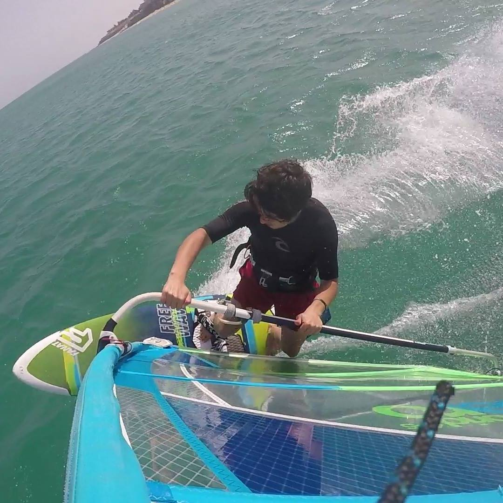
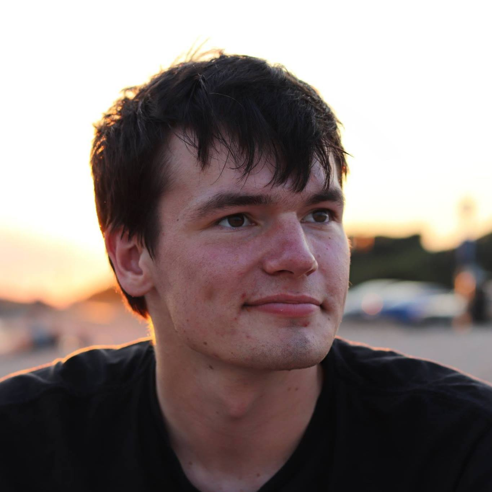
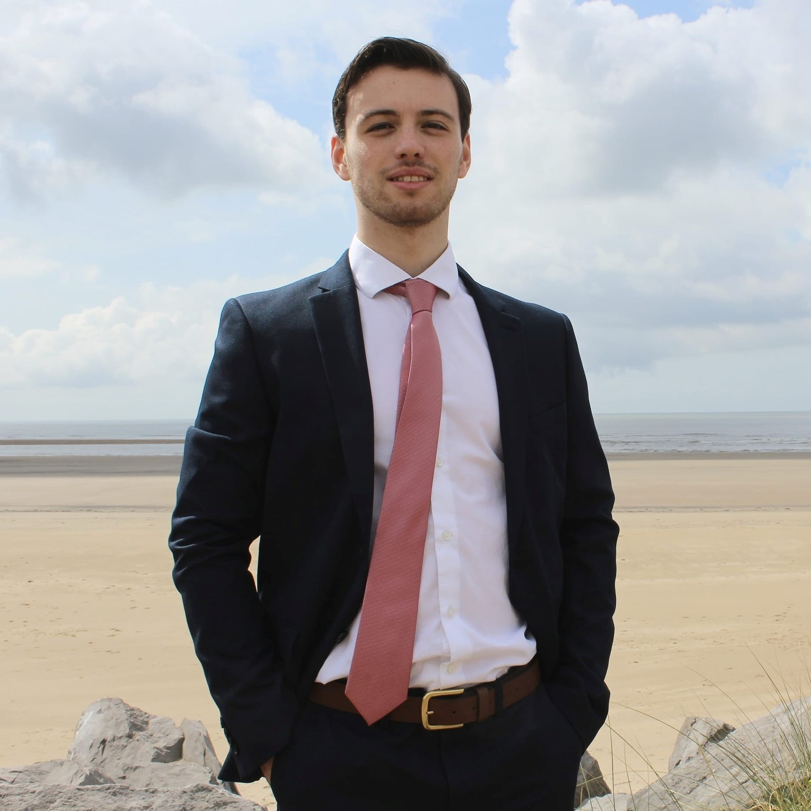
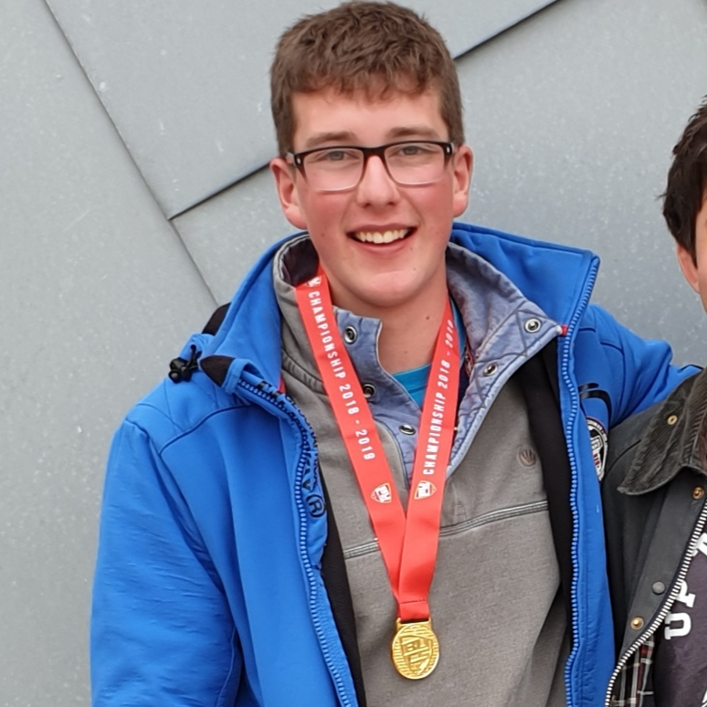
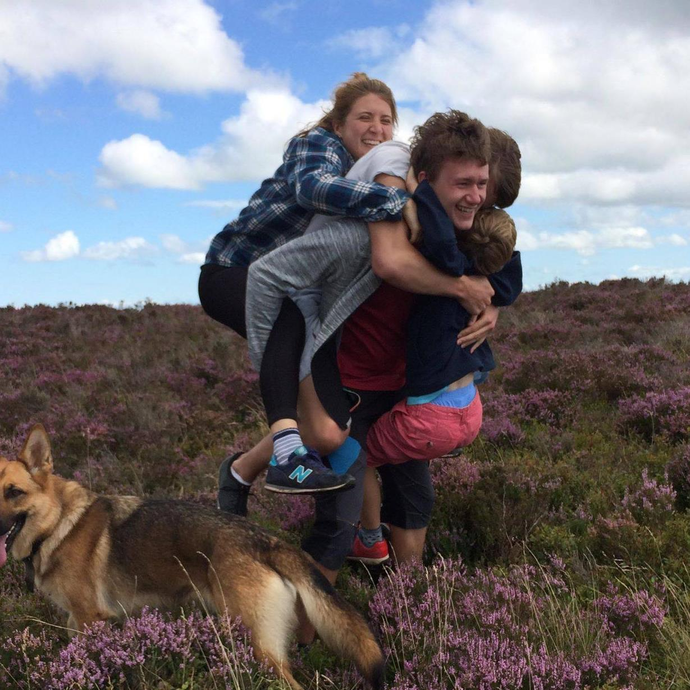

Meet the Committee
Each year at our AGM, SUWC elects a new committee to continue bringing you the best windsurfing experience in south wales. Here is a little bit of info about each member and what their role is in the club!

- Name: Jake
- Position: President
- Studies: Electrical and Electronic Engineering
- Windsurfing Level: Advanced
- Jake has been clinging on to university for the past 5 years. His windsurfing background comes from going to a youth club and racing since he was 12, and has grown into a keen wave sailor, hitting spots around the gower and in porthcawl on a regular basis.

- Name: James
- Position: Vice President
- Studies: Computer Science
- Windsurfing Level: Intermediate
- James is an evergreen fresher. He started windsurfing when he joined the windsurfing club here in Swansea and has improved massively in his two years, making his way into the first team and joining in with some of the wave trips.

- Name: Orestis
- Position: Treasurer
- Studies: Electrical and Electronic Engineering
- Windsurfing Level: Intermediate
- Orestis is the next in a long line of Greek influence in SUWC's history, and is a keen windsurfer when he's not filling in as a mobile DJ. He did a stellar job filling in when the race team needed him last year, and is a big dog in the Swansea Hellenic community.

- Name: Kathryn
- Position: Events Manager
- Studies: Psychology
- Windsurfing Level: Improver
- Kathryn has just got back from a year abroad in Krakow. It's been really great to see how much fun she's been having via her Insta, in fact we wish she'd posted even more! She's been learning to windsurf ever since her first year in Swansea, though most sessions she can be found showing the freshers memes and telling them to like her post recent post (otherwise she'll cry).

- Name: Max
- Position: Secretary
- Studies: Maths
- Windsurfing Level: Intermediate
- Dark horse of the year 2018/19, Max thrilled us all with his antics on our last trip to Sardinia, with an innocent nap in a neighbouring field resulting in some very concerned windsurfers. He was part of our BUCS winning team last year though, so more than made up for it.

- Name: Matty
- Position: Social Secratary
- Studies: Mechanical Engineering
- Windsurfing Level: Intermediate
- Matty stepped up out of the rank and file into social sec status this year. It gives him the perfect opportunity to showcase his sick and twisted ideas of 'fun' on the rest of the society, so make sure you keep your back to the wall at socials. Matty's windsurfing has come a long way in just a year, and he can usually be easily spotted by virtue of bare skin on show mid-february while he's on the water.